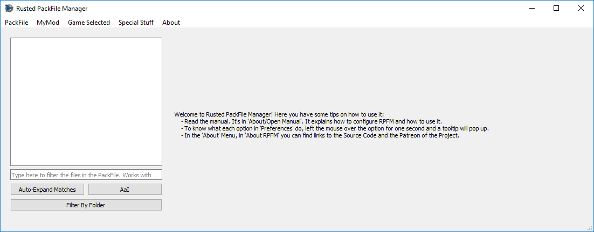

What's RPFM?

This is Rusted PackFile Manager, a.k.a. RPFM, a modding tool for modern Total War Games.
Before explaining what it does, a little explanation on how modding works in Total War games since Empire is due. Since Empire, most of the data of Total War games is in .pack files, packed together so it's faster to read for the game. Those .pack files are containers. Inside them there are a ton of files with the actual data of the game. Some of those files are:
- DB Tables: contains most of the modable stuff of the game, like unit stats, building info,.... They are always in the folder
db/whatever_tables/table_file. - LOCs: contains the actual text you see on the screen when playing the game. Yeah, all those letters are not unicorn magic. It's hard to believe, I know, but it's true.
- Lua/Txt/Xml/...: plain text files. Not rocket science.
- RigidModels: the files with the actual 3D models of almost everything you see in the game, like units, monsters,....
- Images: icons, textures, etc....
- ESF Starpos: these are like a snapshot or savegame that gives the game all the info of how everything in the campaign map should be at the start of the campaign. Like what provinces are where, what armies are in X place with Y units....
Now, how it's modding done in modern Total War Games? By creating a mod PackFile, adding some of those files, changing them, and then telling the launcher to use that mod with the changes you did. Simple isn't? Now, what is RPFM? It's a program that let's you create and edit those PackFiles, allowing you to edit the tables, locs,... inside them too. That's more or less what it is.
But hey, isn't this familiar? If you have modded a modern Total War game, yep. RPFM it's a complete reimplementation in Rust and Qt5 of the old PackFile Manager, because PFM it's slow, buggy, and was unmaintained for more than half a year before someone picked it up. If you've used PFM before, you can see it has a similar UI, and most of the features are in the same place, or close by. It's done that way to make it easier to use for modders coming from PFM.
So, you want to give it a try? Then read the section, as without it most of the Advanced Features RPFM has are disabled. And remember, you can always access this documentation in the
About menu, by clicking on Open Manual.